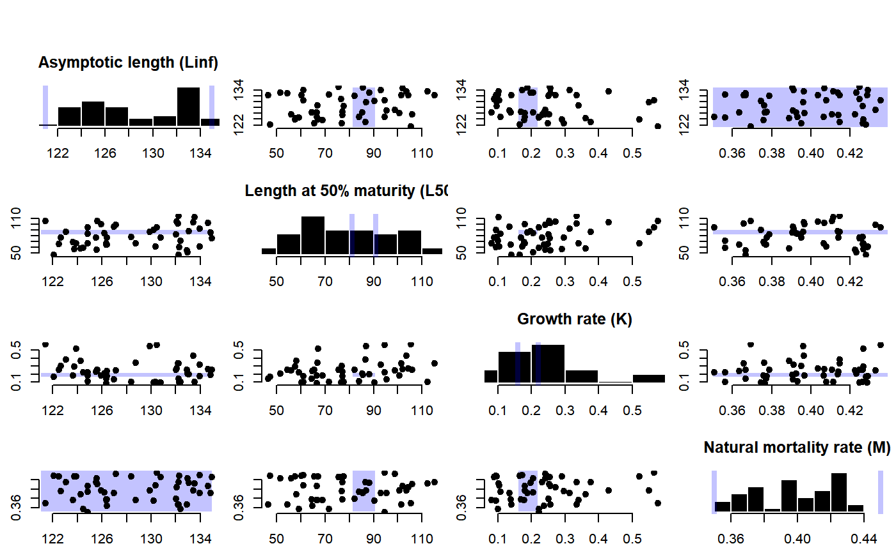
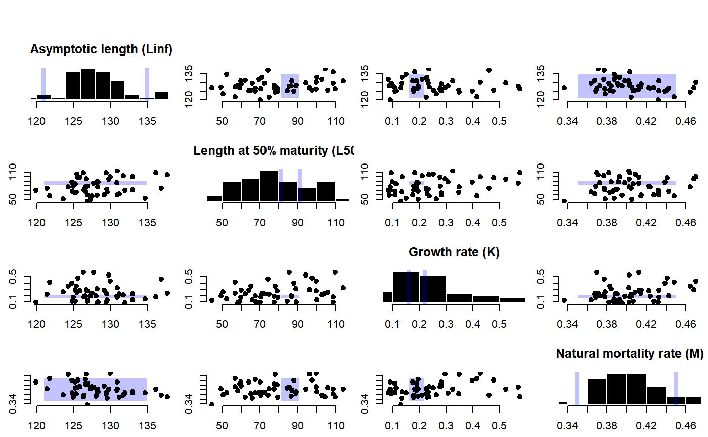
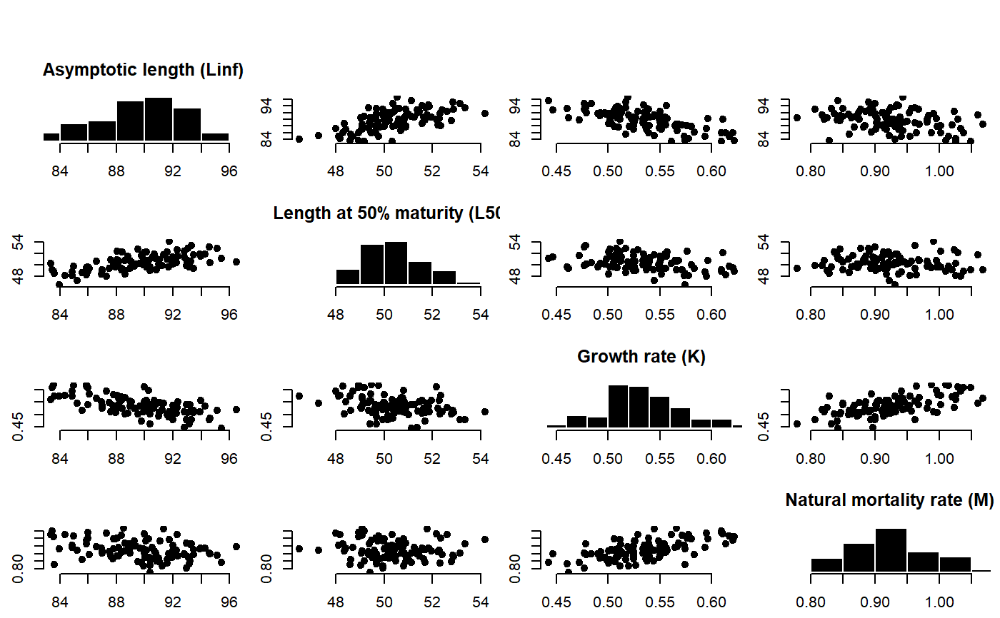
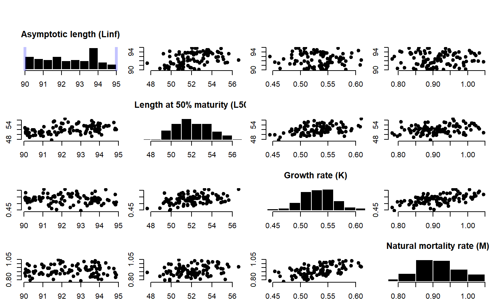
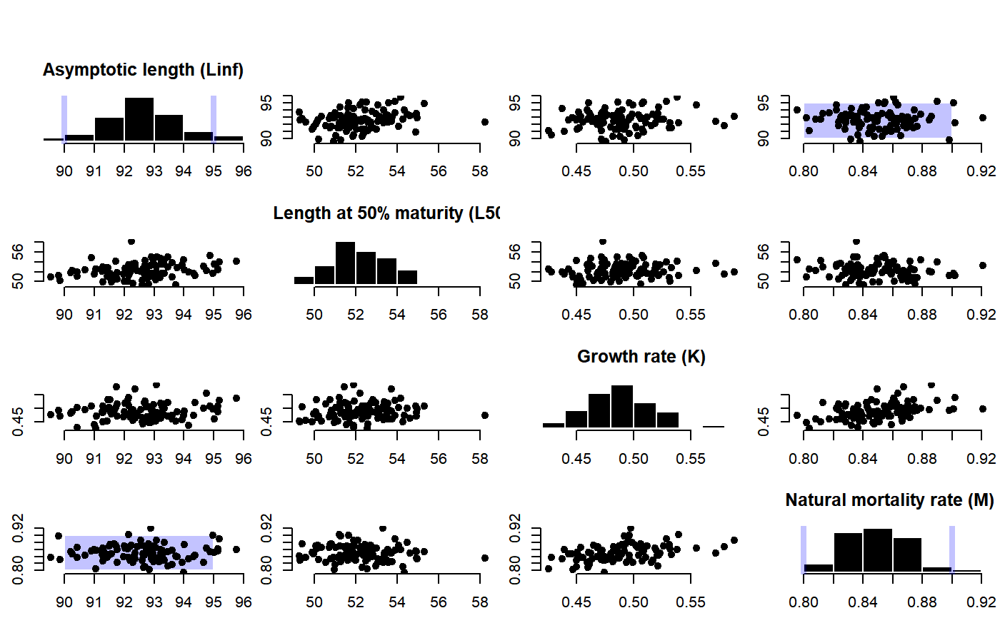

Predict missing life-history parameters
LH2OM.RdPredict missing life-history based on taxonomic information and hierachical model fitted to FishBase life-history parameters
LH2OM(OM, dist = c("unif", "norm"), filterMK = FALSE, plot = TRUE, Class = "predictive", Order = "predictive", Family = "predictive", msg = TRUE, db = DLMtool::LHdatabase) predictLH(inpars = list(), Genus = "predictive", Species = "predictive", nsamp = 100, db = DLMtool::LHdatabase, dist = c("unif", "norm"), filterMK = TRUE, plot = TRUE, Class = "predictive", Order = "predictive", Family = "predictive", msg = TRUE)
Arguments
| OM | An object of class 'OM' |
|---|---|
| dist | Character. Should parameters be sampled from a uniform ( |
| filterMK | Logical. Should the predicted M and K parameters be filtered within the range specied in |
| plot | Logical. Should the plot be produced? |
| Class | Optional higher order taxonomic information |
| Order | Optional higher order taxonomic information |
| Family | Optional higher order taxonomic information |
| msg | Logical. Should messages be printed? |
| db | Database from FishLife model with fitted model results |
| inpars | A named list with lower and upper bounds of provided parameters: Linf, L50, K and M (must be length 2). Unknown or missing parameters should not be included. For example, an empty list assumes that all four life history parameters are unknown and need to be estimated. See Details below for more information. |
| Genus | Character string specifying the Genus name. Optional. Default is 'predictive' |
| Species | Character string specifying the Species name. Optional. Default is 'predictive'. If full species name (Genus + Species) is not found if FishLife database (based on FishBase) higher order taxonomony will be used (e.g., Family) for the predictions. |
| nsamp | The number of samples to return |
Source
https://github.com/James-Thorson/FishLife/
Value
LH2OM: An OM with OM@cpars populated with OM@nsim samples of M, K, Linf and L50
predictLH: A data.frame with nsamp rows with Linf, L50, K, and M values.
Details
The model predicts missing life-history parameters based on provided parameters and taxonomic information.
If both M and K are provided in inpars or OM, K values are predicted and predictions filtered
so that resulting K values are within bounds specified in inpars$K or OM@K (see filterMK).
If both Linf and L50 are provided in inpars or OM, L50 values are predicted and values in inpars$L50
or OM@L50 are ignored.
Functions
LH2OM: Predict missing life-history and populateOM@cparspredictLH: Predict missing life-history based on taxonomic information and hierachical model fitted to FishBase life-history parameters
Note
See relevant section of the DLMtool User Guide for more information.
References
Thorson, J. T., S. B. Munch, J. M. Cope, and J. Gao. 2017. Predicting life history parameters for all fishes worldwide. Ecological Applications. 27(8): 2262--2276
Examples
#>#> Predicting K from M#> Predicting from all species in FishBase#> Predicting L50 from Linf#> Predicting K from M#> Predicting from all species in FishBase# predict life-history parameters and return a data frame # predict all life-history parameters Predicts <- predictLH(list(), "Katsuwonus", "pelamis")#> Predicting Linf#> Predicting L50#> Predicting K#> Predicting M#> Species match: Actinopterygii Perciformes Scombridae Katsuwonus pelamishead(Predicts)#> Linf L50 K M #> 1 87.81959 50.01853 0.5809910 0.9982216 #> 2 89.04757 50.58500 0.5501340 0.9459138 #> 3 85.98062 49.65646 0.5392661 1.0023674 #> 4 87.00504 49.09887 0.5371753 0.9183800 #> 5 88.62734 48.34673 0.5005286 0.9178338 #> 6 94.59301 53.13987 0.4770506 0.9006242# predict L50 from Linf, and M and K Predicts <- predictLH(list(Linf=c(90, 95)), "Katsuwonus", "pelamis")#> Predicting L50#> Predicting K#> Predicting M#> Species match: Actinopterygii Perciformes Scombridae Katsuwonus pelamis# predict L50 and K Predicts <- predictLH(list(Linf=c(90, 95), M=c(0.8, 0.9)), "Katsuwonus", "pelamis")#> Predicting L50#> Predicting K#> Species match: Actinopterygii Perciformes Scombridae Katsuwonus pelamis# predict L50 and K sampling Linf and M from normal distribution Predicts <- predictLH(list(Linf=c(90, 95), M=c(0.8, 0.9)), "Katsuwonus", "pelamis", dist='norm')#> Predicting L50#> Predicting K#> Species match: Actinopterygii Perciformes Scombridae Katsuwonus pelamis